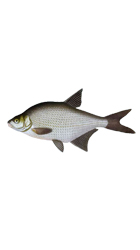
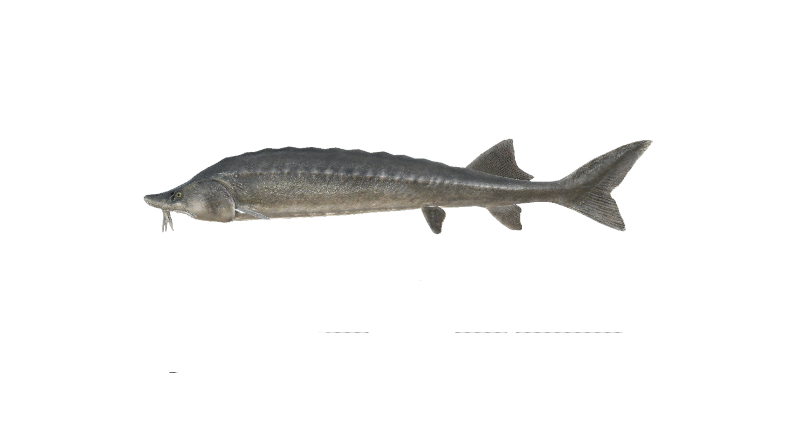
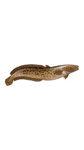

Рыбы на каспийском море
-
Лещ
Лещ (обыкновенный, восточный, дунайский лещ; лат. Abramis brama) — пресноводная рыба, единственный представитель рода лещей (Abramis) из семейства карповых (Cyprinidae), отряда карпообразных (Cypriniformes). Тело высокое, максимальная высота составляет около трети длины тела. Голова и рот маленькие. Рот заканчивается трубкой, которая может выдвигаться. Спинной плавник высокий и короткий с тремя жёсткими неветвистыми и 8—10 мягкими ветвистыми лучами. Анальный плавник длинный с тремя жёсткими и 22—29 мягкими лучами, начинается за задним краем основания спинного плавника. Между брюшными плавниками и анальным есть не покрытый чешуёй киль. Глоточные зубы однорядные, по пять с каждой стороны.
- 
-
Сельдь Кесслера
Некоторые источники выделяют 2 подвида кесслеровской сельди — Alosa kessleri kessleri (собственно кесслеровская сельдь) и Alosa kessleri volgensis (волжская сельдь), в других волжскую сельдь выделяют в самостоятельный вид Alosa volgensis, таким образом, отождествляя Alosa kessleri и Alosa kessleri kessleri. Ранее подвидом кесслеровской сельди считался также вид Alosa pontica. Название «бешенка» получила за то, что во время нереста сильно плещется в воде.

-
Белуга
Многим знакома густера, широко распространенная по различным водоемам. Не стоит путать эту рыбу с подлещиком, есть между ними целый ряд отличий, в которых постараемся разобраться. Кроме внешности, изучим так же поведение густеры, ее характер, пищевые привычки, особенности нерестового периода и статус рыбьей популяции
- 
-
Налим
Нали́м, или обыкнове́нный нали́м— единственная исключительно пресноводная рыба отряда трескообразных. Имеет промысловую ценность.Тело удлинённое, невысокое, округлое в передней части и сильно сжатое с боков — в задней. Голова уплощена, её длина превышает максимальную высоту тела. Глаз маленький. Рот большой, полунижний, нижняя челюсть короче верхней. На челюстях и головке сошника имеются мелкие щетинковидные зубы, но на нёбе их нет. На подбородке имеется один непарный усик (составляющий 20—30 % длины головы) и пара усиков на верхней челюсти
- 